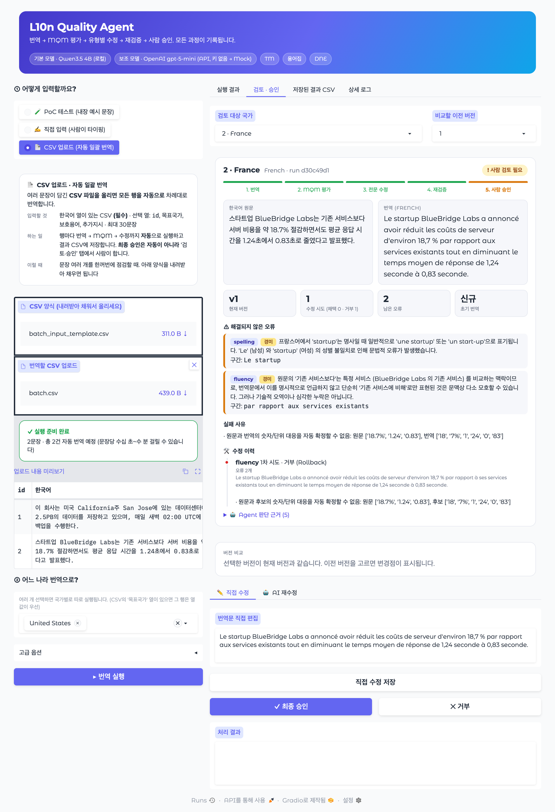
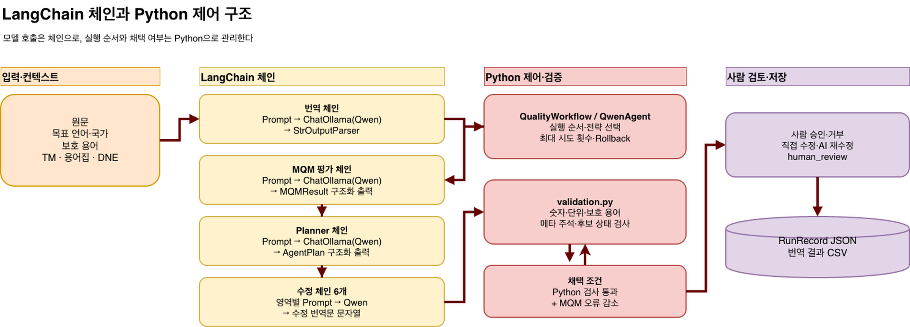

L10n Quality Agent:
찾고, 고치고, 검증하고, 사람이 승인합니다
“고칠 때마다 전체를 다시 재서, 나빠지면 되돌립니다.”
AI 번역의 오류를 MQM 기준으로 찾고, 유형별 전문 도구로 고치고, 결정적 검사와 재평가로 확인한 뒤 최종 승인은 사람이 하는 번역 품질 개선 Agent입니다.



AI 번역은 빠르지만, 고치는 과정은 통제되지 않았습니다
한국어 문장을 여러 언어로 번역한 뒤 품질을 사람이 일일이 확인하는 일은 느립니다. 그렇다고 AI에게 고치기까지 통째로 맡기면 무엇이 바뀌었는지 알 수 없습니다.
‘여기만 고쳐줘’도, 고정된 순서 처리도 충분하지 않았습니다
- 범용 수정 프롬프트의 한계
- 고정 Workflow의 한계
범용 수정 프롬프트의 한계
오류 하나를 지적하면 멀쩡한 부분까지 바꾸거나 새 오류를 만듭니다. 숫자·단위·보호 용어가 틀어져도 모델은 “다 고쳤다”고 말하고, 수정 전후와 이유는 남지 않아 검수자가 확인할 수 없습니다.
고정 Workflow의 한계
accuracy › terminology › … 순으로 고정해 돌리면 재현은 쉽지만, 오류가 풀리지 않을 때 다음에 무엇을 할지 판단하지 못합니다. 실제 Baseline에서 4개 언어 12쌍이 모두 사람 검토로 넘어갔습니다.
다른 부분은 건드리지 않고 오류를 하나씩 고치고,고칠 때마다 검증해서나빠진 변경은 되돌리며최종 결정은 사람에게 맡기려면 어떻게 해야 할까?
그래서 오류를 나눠 고치고, 검증하고, 사람이 승인하는 Agent를 선택했습니다
LLM은 후보 번역을 만들 뿐이고, 채택·Rollback·상태 전환은 Python 코드가 결정합니다. 실행 하나의 전체 이력은 run_id 단위 JSON으로 남습니다.
실행 결과: 채택·Rollback 이력 CSV 일괄 입력
CSV 일괄 입력세 가지를 만들었습니다
- MQM 평가와 전문 수정
- 결정적 검증과 Rollback
- Agent, 에스컬레이션, 사람 승인
MQM 평가와 전문 수정
Pydantic 구조화 출력(MQMResult)으로 오류의 카테고리·심각도·위치·수정 제안을 받고, accuracy, terminology, spelling, grammar, style, fluency 6개 전용 수정 체인이 각자 해당 오류만 고칩니다. 이미 맞는 표현은 DNE로 보호하고, TM·용어집을 프롬프트에 넣습니다.
결정적 검증과 Rollback
숫자·단위·보호 용어·메타 주석 혼입은 LLM이 아니라 Python 규칙(validation.py)으로 검사합니다. 수정 후보는 전체를 다시 MQM 평가하고, 대상 오류가 줄지 않았거나 새 Critical 오류가 생기면 후보를 버리고 이전 번역을 유지(Rollback)합니다.
Agent, 에스컬레이션, 사람 승인
고정 우선순위로 풀리지 않으면 Qwen Agent가 남은 오류와 이력을 보고 다음 전략을 고르거나 포기하고, 그래도 안 되면 OpenAI gpt-5-mini가 한 번 더 시도합니다(키가 없으면 Mock). 마지막은 사람이 직접 수정 / AI 재수정 / 승인 / 거부를 선택합니다.
고정 Workflow 위에 Agent와 에스컬레이션을 단계적으로 얹었습니다
Figure 1. 실행 흐름. 분홍색 단계는 LLM이 아니라 코드 또는 사람이 판단하는 지점입니다.
LangChain 체인으로 호출하고 Python 코드로 제어합니다
workflow.py 하나가 유일한 오케스트레이터이고, Ollama와 통신하는 곳은 chains.py뿐입니다. UI와 CLI는 같은 Workflow를 호출합니다. RunRecord는 모델명·temperature·seed·프롬프트 버전과 모든 번역 버전·시도 이력을 소유해, 설정이 바뀌어도 과거 실행을 그대로 확인할 수 있습니다.

Figure 2. 모델 호출은 LangChain 체인(LCEL), 실행 순서·채택 여부·검증은 Python 코드.
번역 자원 3종
TM(번역 메모리), 용어집, DNE(이미 맞는 표현 보호)를 프롬프트와 검증에 주입합니다. TM에 일치해도 자동 승인하지 않습니다.
7가지 실행 상태
EVALUATING → REVISING → (HUMAN_REVIEW_REQUIRED | AWAITING_HUMAN_APPROVAL) → APPROVED / REJECTED. HUMAN_REVIEW_REQUIRED는 종단이 아니라 사람이 새 run을 분기하라는 신호입니다.
재현성 스냅샷
parent_run_id로 재수정 계보를 추적하고, 시도마다 수정 전후 MQM 결과를 비교용으로 저장합니다.
아직 “더 좋아졌다”고 말할 수 있는 단계는 아닙니다
FLORES+ dev 문장을 언어당 3개씩 뽑아(seed=42) 단순 번역(A)과 Agent 최종본(B)을 chrF로 비교한 Baseline입니다. 표본이 작아 방향성만 보는 수치입니다.
chrF: 단순 번역 vs AgentBaseline
언어별 평균(n=3). 높을수록 참조 번역과 가깝습니다.
문장당 평균 소요 시간
로컬 Ollama(Qwen3.5 4B) 기준, 초. 평가·재시도 호출이 늘어난 비용입니다.
있는 그대로 읽으면: 4개 언어 12쌍이 모두 HUMAN_REVIEW_REQUIRED로 끝났고, chrF는 일본어·이탈리아어 동일, 독일어 +1.6, 프랑스어 −5.6이었습니다. 4B 로컬 모델에서 Agent는 점수를 일관되게 올리지 못했고 시간은 약 10~20배 늘었습니다. 지금 이 시스템의 가치는 점수 상승보다 실패를 숨기지 않고 이유와 함께 사람에게 넘기는 것입니다.
Wikivoyage KO→EN 비교 보기TM·용어집·DNE 적용 5문장: 상태, MQM 오류, 시도, 시간, chrF눌러서 펼치기
고정 Workflow 기준 첫 실행입니다. 5문장 중 2문장은 자동 검사를 통과해 사람 승인 대기, 3문장은 사람 검토로 넘어갔고 id 938만 오류가 3건에서 1건으로 줄었습니다.
| id | 최종 상태 | MQM 오류 | 시도 | 시간 | chrF |
|---|---|---|---|---|---|
| 889 | AWAITING | 0 → 0 | 0 | 1.7s | 67.3 |
| 883 | AWAITING | 0 → 0 | 0 | 1.7s | 78.3 |
| 806 | HUMAN_REVIEW | 1 → 1 | 2 | 27.2s | 33.9 |
| 969 | HUMAN_REVIEW | 1 → 1 | 2 | 28.8s | 31.4 |
| 938 | HUMAN_REVIEW | 3 → 1 | 2 | 28.6s | 31.7 |
실험하면서 실제로 발견한 문제들
결정적 검증기의 오탐
번역은 정확한데 “2~3km”가 “2 to 3 kilometers”와 대응되지 않아(풀어 쓴 단위) 숫자 검증에서 즉시 사람 검토로 갔습니다. 정규식 한계로 기록했습니다.
“오류 없음 = 해결됨” 버그
결정적 검증 실패로 MQM을 건너뛴 run의 unresolved_errors가 빈 리스트인데, Agent가 이를 해결로 보고 승인 대기로 올렸습니다. 진입 가드를 고치고 회귀 테스트를 추가했습니다.
근거 없는 전략 제안
5문장 예비 실행에서 Agent가 추가로 해결한 건은 0건이었고, 감지되지 않은 카테고리(accuracy, terminology)를 골라 예산만 썼습니다. 다음 개선: strategy를 실제 남은 오류의 카테고리로 제한.
fluency 수정이 약하다는 신호
독일어 2문장은 chrF가 올랐지만 사람 검토로 끝났고, 한 문장은 다른 카테고리는 고쳤지만 fluency만 반복 실패했습니다. 카테고리별 accept/reject 집계가 다음 실험입니다.
입력은 세 가지, 흐름은 같습니다
어느 방식이든 이후 흐름(번역 → MQM 평가 → 수정 → 사람 승인)은 같습니다. 자동으로 하는 것은 수정까지이고, 승인은 항상 사람이 합니다. 화면 속 결과는 로컬 Qwen3.5 4B로 실제 실행해 저장된 기록을 다시 불러와 캡처했고, 문장은 모두 가상의 예시입니다.
- 1. 서비스 화면
- 2. PoC 테스트
- 3. 직접 입력
- 4. CSV 업로드
- 5. 실행 결과
- 6. 검토·승인
왼쪽에서 입력 방식과 목표 국가를 고르면, 오른쪽에 번역 → MQM 평가 → 수정 → 사람 승인 단계가 진행 표시와 함께 나옵니다.
내장 문장 30개 중 1개를 고릅니다(타이핑 없음). 설치 확인, 데모, 모델·프롬프트 변경 전후 비교에 씁니다.

한국어 원문(필수)과 보호 용어·추가 지시(선택)를 넣어 사람이 한 문장씩 품질을 점검합니다.
한국어 열이 있는 CSV(최대 30문장)를 올리면 즉시 검증하고 “몇 문장·몇 건이 실행될지”를 미리 보여줍니다. 한 문장이 실패해도 나머지는 계속 진행합니다.진행 단계, 상태 배지, 원문·번역 비교, 수정 이력(채택/Rollback), Agent 판단 근거를 국가별 카드로 보여줍니다.
남은 MQM 오류와 이전 버전과의 변경점(diff)을 보고 직접 수정 / AI 재수정 / 승인 / 거부를 선택합니다. 프랑스어 예시는 숫자·단위 대응을 자동 확정할 수 없어 후보를 거부(Rollback)하고 사람에게 넘긴 의도된 동작입니다.
신뢰를 위한 장치
| 결정적 검증 | 숫자·단위·보호 용어·메타 주석 혼입을 LLM이 아닌 Python 규칙으로 검사합니다. |
|---|---|
| Rollback | 대상 오류가 줄지 않았거나 새 Critical 오류가 생기면 후보를 버리고 이전 번역을 유지합니다. |
| 사람 승인 | Critical 오류, 반복 실패, 시도 상한 도달은 모두 사람 검토로 넘깁니다. 최종 승인은 항상 사람입니다. |
| 추적성 | 수정 전후, 판단 근거, 채택/거부 사유를 run_id별 JSON으로 저장하고 결과는 CSV로 누적합니다. |
| 검증 | 단위 테스트(pytest)로 검증기·워크플로우·Agent 가드를 점검하고, 발견한 버그는 회귀 테스트로 고정했습니다. |
기타
| 현재 한계 | CSV는 순차 실행(최대 30문장). 비동기 큐·병렬·다중 사용자와 LangGraph Checkpointer는 미구현입니다. 4B 로컬 모델이라 판단 품질에 한계가 있고, 모델별 정량 비교·Golden Dataset 평가는 향후 과제입니다. RAG/Vector DB는 범위에서 제외했습니다. |
|---|---|
| 다음 실험 | Baseline 1(4개 언어 × 3문장)에서 카테고리별 accept/reject 비율을 집계하고, 나온 구체적 실패 사례를 근거로만 프롬프트를 바꿉니다. |
| 데이터 | 공개 데이터셋 FLORES+(CC BY-SA 4.0)만 사용했고, TM·용어집·DNE는 이를 바탕으로 새로 만들었습니다. 화면 속 예시 문장은 모두 가상입니다. |
| 독립성 | 작성자 개인이 개인 시간·장비로 만든 독립 프로젝트이며, 어떤 회사의 내부 코드·프롬프트·데이터·평가 결과도 포함하지 않습니다. 코드는 MIT 라이선스입니다. |
| Tech | Python 3.11, LangChain (LCEL), Pydantic, Ollama (Qwen3.5 4B), OpenAI gpt-5-mini |
| Tech (UI & data) | Gradio, pandas, pytest, FLORES+ |
| 저장소 | github.com/sihunwang-skala/l10n-quality-agent |